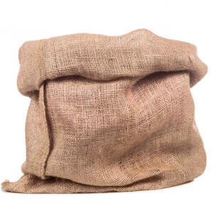

ϩⲱⲧ S, ϩⲟⲧ SB (once) nn m, sack, bag: Jos 9 10, Mk 2 22 (B = Gk) ἀσκός; Job 32 19 (B ϩⲟⲓ ⲛⲛⲓϥⲓ) φυσητήρ; Nu 6 15 (var P 44 106 ϩⲟⲧ قفّة, B = Gk) κανοῦν, K 231 B ⲡⲓϩ. زقّ; Pey Gr 165 ϩ. ⲉϥⲙⲉϩ ⲛϣⲱ, Z 614 ϩ. ⲛⲛⲟⲩⲃ, BMar 195 ⲟⲩϩ. ⲛⲧⲁϥⲣ ϩⲣⲏⲥⲥⲉ (ῥήσσειν).
(noun masculine)
container
sack, bag [ασκος, φυσητηρ]

complete
718b
See also:
| view | ϭⲟⲟⲩⲛⲉ S ϭⲁⲩⲛⲉ SSfA ϭⲁⲩⲟⲩⲛⲉ A ϫⲱⲟⲩⲛⲓ B ϭⲁⲩⲛⲓ, ϫⲁⲩⲛⲓ (?) F | (noun feminine) hair-cloth, sacking, sack [σακκος, δερρις τριχινη, μαρσιππος]
as measure, sackful935 |
| view | ⲥⲟⲕ, ⲥⲱⲕ SB ⲥⲁⲕ, ⲥⲟⲟⲕ, ⲥⲱⲱⲕ S | (noun masculine) sack, sackcloth, bag [σακκος, μαρσιππος]1386 |
| view | ϣⲁⲧⲓⲗⲁ, ⲭⲁⲧⲓⲗⲁ, ϣⲁⲧⲉⲗⲁ S | (noun masculine) bag or some such receptacle1988 |